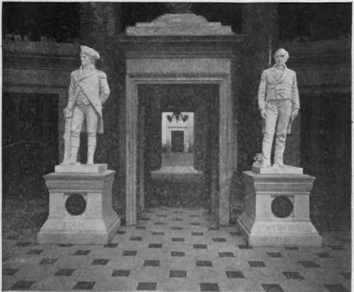
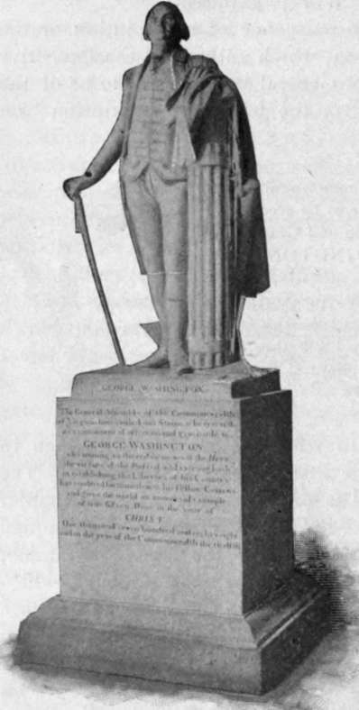

Statuary. Continued
Description
This section is from the book "The National Capitol. Its Architecture Art And History", by George C. Hazelton, Jr. Also available from Amazon: The National Capitol Its Architecture Art and History.
Statuary. Continued
On the occasion of the acceptance of these statues by Congress, Mr. Gal-linger exclaimed of General Stark: "Amid the gloom and despondency of the darkest days of that heroic struggle his vision discerned a victorious ending. Eighty-four years of age when the second war with Great Britain commenced, he longed for the energy of youth that he might engage in the strife, and chafed under the burdens that kept him from again serving his country".
Mr. Chandler, representing the State of Webster's birth, proudly said: " In centuries to come, if the statues in the gallery escape the levelling hand of time, and future generations look upon the likeness of Webster and ask who he was and what he did, there shall come the undying eulogium : He was the great expounder and defender of the American Constitution".
Mr. Hoar of Massachusetts honored his State's adopted son and Senator, whose greatest life-work had been performed in the Capitol, in words of eloquence and kindly judgment: "It would have been fortunate," he said, " for Mr. Webster's happiness and for his fame if he had died before 1850. But what would have been his fame and what would have been his happiness if his life could have been spared till 1865 ! He would have seen his great arguments in the reply to Haine, in the debates with Calhoun, inspiring, guiding, commanding, strengthening. The judge in the court is citing them. The orator in the Senate is repeating them. The soldier by the camp fire is meditating them. The Union cannon is shotted with them. They are flashing from the muzzle of the rifle. They are gleaming in the stroke of the saber. They are heard in the roar of the artillery. They shine on the advancing banner. They mingle with the shout of victory. They conquer in the sur render of Appomattox. They abide forever and forever in the returning reasoi of an estranged section and the returning loyalty of a united people ! Oh if he could but have lived ! If he could but have lived, how the hearts on his countrymen would have come back to him ! In all the attributes of a mighty and splendid manhood he never had a superior on earth. Master of English speech, master of the loftiest emotions that stirred the hearts of his countrymen, comprehending better than any other man save Marshall the principles of her Constitution, he is the one foremost figure in our history between the day when Washington died and the day when Lincoln took the oath of office".
The statue of Samuel Adams, by Anne Whitney, next in line, is the gift of Massachusetts. On its base are words addressed by him, as the spokesman of the committee, to Governor Hutchinson on March 6, 1770, the day after the Boston Massacre, in demanding the withdrawal of the British troops : " Night is approaching. An immediate answer is expected. Both regiments or none." William King-, by Franklin Simmons, comes as the first Governor .of the State of Maine. The statue is interesting for the debate provoked ii the Senate, January 22, 1878, when Mr. Hannibal Hamlin introduced the reso lution for its acceptance by the government. Mr. Blaine practically imputed to the Massachusetts Senators, Hoar and Dawes, an ignorance of the history of their own State. A skirmish naturally ensued, which opened old wounds relative to the war of 1812, the creation of the State of Maine out of Massachusetts territory, and the sacrifices forced upon the northern State under the Ashburton Treaty, negotiated by a former Massachusetts Senator when Secretary of State, Daniel Webster.
The plaster statue of George Washington, which occupies the next place in the circle and which, perhaps, found its way into the possession of the government through Thomas Jefferson, is probably one of the models which the sculptor, Jean Antoine Houdon, made for the marble statue now in the rotunda of the State House at Richmond, Virginia. This theory of its origin is suggested by the following letter from Jefferson to Mr. Parker, written in the Senate Chamber January 13, 1800 : " I have the honor to inform you that the marble statue of General Washington in the Capitol at Richmond, with its pedestal, cost in Paris 24,000 livres or 1,000 Louis d'ors. Besides this we paid Houdon's coming to and returning from Virginia to take the General's likeness, which as well as I recollect were about 500 guineas, and the transportation of the statue to Virginia with, a workman to put it up, the amount of which I never heard. I believe that in Rome or Florence, the same thing may be had from the best artists for about two thirds of the -above prices, executed in the marble of Carrara, the best now known. But unless Ciracchi's busts of General Washington are, any of them, there, it would be necessary to send there one of Houdon's figures in plaster, which, packed for safe transportation, would cost 20 or 30 guineas".
The Richmond statue was sculptured in pursuance of a resolution of the Legislature of Virginia, of January 22, 1784, which authorized the Executive '* to take measures for procuring a statue of General Washington, to be of the finest marble and the best workmanship, with the following inscription* on its pedestal:
The General Assembly of the Commonwealth of Virginia have caused this Statue to be erected as a Monument of Affection and Gratitude to GEORGE WASHINGTON; Who, uniting to the Endowments of the Hero the Virtues of the Patriot, and exerting both in establishing the Liberties of his Country, has rendered his Name dear to his Fellow Citizens, and given the World an Immortal Example of true Glory".
Governor Harrison accordingly wrote to Jefferson and Franklin, then in Paris; and they selected Houdon as "the first statuary in Europe." The artist seems to have considered the work " as promising the brightest chapter of his history." His eagerness to undertake the task was, no doubt, prompted partly by the hope of being employed to design also the equestrian statue, authorized by Congress on August 7, 1783, for which he made a model, exhibited in the Salon of 1793. He reached Washington's home upon the Potomac late on Sunday night, October 2, 1785, where he remained a fortnight enjoying the intimacy of the family. Every opportunity was afforded him by close companionship for the study of his subject's physiognomy and temperament, and he was permitted not only to take accurate measurements of Washington's frame, but to make a mold of the face, head and chest. *■' George Washington, in the prime of life," writes George W. P. Custis, "stood six feet two inches, and measured precisely six feet when attired for the grave." This statue is taller. N , Washington himself suggested the costume. It is the Continental uniform which he was accustomed to wear as Commander-in-chief, and in which he resigned his commission at Annapolis. Many think the statue overcrowded with symbolism, and that the sword, cane, ploughshare and fasces detract from its dignity. This would undoubtedly be true, if it were not for the easy and natural pose which the artist has given to the figure. Washington was fifty-four years of age when Houdon visited Mount Vernon j and the fact that no other statue was ever made from his person renders this work particularly interesting and valuable. How well it satisfied his contemporaries, may be gathered from an expression of Marshall to Jared Sparks, that, "to a person standing on the right hand of the statue, and taking a half front view, ' it represented the original as perfectly as a living man could be represented in marble".
* This tribute is said to have been penned at the time by James Madison, upon his knee.
The bronze statue of Thomas Jefferson, by P. T. David d'Angers, which is the next in line, was presented by Lieutenant Uriah P. Levy of the navy, in 1834, and is rightfully considered one of the most artistic statues in the hall. Beside it stands a colorless representation in marble of Edward Dickinson Baker, the Senator-soldier from Oregon, another example of the art'of Horatio Stone. The bronze statue of Robert R. Livingston, who, as first chancellor of his State, administered the oath of office to the first President of the United States, is the gift of New York. Its sculptor, E. D. Palmer, deserves credit for an exquisite piece of work—one of the best in the Capitol.
This circular assemblage of statues, at present, is completed by busts of Polish heroes of the Revolution. The first is by H. D. Saunders (1857, #500) of Tadeusz Kosciuszko, who inspired in Campbell the words :
" Hope, for a season, bade the world farewell, And Freedom shriek'd—as Kosciuszko fell".
The other is of Kazimierz Pulawski, who was killed at the siege of Savannah, and is by H. Dmochowski (1857 Phi.). Statues of Blair and Benton, to be presented by Missouri, and of Kenna, by West Virginia, are now being sculptured.
On the east wall, within the columns, overlooking the small lobby now reserved for ladies, is a portrait of Joshua R. Giddings (1865), for which the government paid the artist, Miss C. L. Ranson, $1,000.
Continue to:
- prev: Statuary
- Table of Contents
- next: Columns